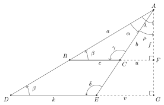
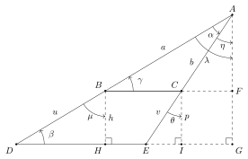
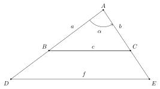
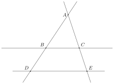
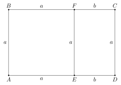

Eclats de vers : Matemat : Proportions géométriques
Table des matières
1. Triangles semblables
1.1. Deux angles
1.1.1. Disposition acutangle
Considérons deux triangles \(ABC\) et \(XYZ\) qui possèdent deux angles \(\alpha\) et \(\beta\) de mêmes amplitudes. Nous avons vu dans la section qui traite de triangles possédant un angle de même amplitude que nous pouvons construire un triangle \(ADE\) isométrique à \(XYZ\), tel que les deux angles \(\alpha\) soient placés au même endroit :
On trace le segment \([A,G]\), perpendiculaire à \([D,E]\). Les angles correspondants \(\beta\) étant de même amplitude, les côtés \([B,C]\) et \([D,E]\) sont parallèles. Le segment \([A,G]\) est donc aussi perpendiculaire à \([B,C]\), comme indiqué sur le schéma. Remarquons que les troisièmes angles des deux triangles sont aussi de même amplitude :
\[ \gamma = \delta = 180^\circ - \alpha - \beta \]
On définit les longueurs et la hauteur du triangle \(ABC\) :
\[ a = \abs{AB} \qquad \qquad \qquad b = \abs{AC} \qquad \qquad \qquad c = \abs{BC} \qquad \qquad \qquad f = \abs{AF} \]
Idem pour le triangle \(ADE\) :
\[ d = \abs{AD} \qquad \qquad \qquad e = \abs{AE} \qquad \qquad \qquad k = \abs{DE} \qquad \qquad \qquad g = \abs{AG} \]
et pour les côtés partiels :
\[ u = \abs{BF} \qquad \qquad \qquad v = \abs{FC} \qquad \qquad \qquad w = \abs{DG} \qquad \qquad \qquad z = \abs{GE} \]
Les triangles rectangles \(BFA\) et \(DGA\) ont un angle \(\lambda\) et même amplitude. Ce sont donc des triangles semblables. On a la proportion commune :
\[ \varphi = \frac{d}{a} = \frac{w}{u} = \frac{g}{f} \]
Les triangles rectangles \(FCA\) et \(GEA\) ont un angle \(\mu\) et même amplitude. Ce sont donc des triangles semblables. On a la proportion commune :
\[ \psi = \frac{e}{b} = \frac{z}{v} = \frac{g}{f} \]
Les deux proportions sont donc identiques :
\[ \varphi = \frac{g}{f} = \psi \]
avec comme conséquence immédiate :
\[ \varphi = \frac{d}{a} = \frac{w}{u} = \frac{g}{f} = \frac{z}{v} = \frac{e}{b} \]
Isolons \(w\) :
\[ w = \varphi \ u \]
et \(z\) :
\[ z = \varphi \ v \]
Le côté \(k\) peut s’écrire :
\[ k = w + z \]
En remplaçant \(w\) et \(z\) par leurs expressions, cette équation devient :
\[ k = \varphi \ u + \varphi \ v = \varphi \ (u + v) \]
Comme :
\[ c = u + v \]
on a finalement :
\[ k = \varphi \ c \]
Les côtés \(k\) et \(c\) respectent également la proportion \(\varphi\). Les triangles \(ABC\) et \(ADE\) ont donc leurs trois côtés proportionnels :
\[ \varphi = \frac{d}{a} = \frac{e}{b} = \frac{k}{c} \]
ou encore :
\[ \varphi = \frac{\abs{AD}}{\abs{AB}} = \frac{\abs{AE}}{\abs{AC}} = \frac{\abs{DE}}{\abs{BC}} \]
Les trois angles \(\alpha\), \(\beta\) et \(\gamma = \delta\) étant de mêmes amplitudes, les triangles \(ABC\) et \(ADE\) sont semblables. Comme ce dernier est isométrique au triangle \(XYZ\), les triangles \(ABC\) et \(XYZ\) sont également semblables.
Deux triangles acutangles qui possèdent deux angles de mêmes amplitudes sont des triangles semblables.
1.1.2. Disposition obtusangle
Considérons deux triangles obtusangles \(ABC\) et \(XYZ\) qui possèdent deux angles \(\alpha\) et \(\beta\) de mêmes amplitudes. Nous pouvons construire un triangle \(ADE\) isométrique à \(XYZ\), tel que les deux angles \(\alpha\) soient placés au même endroit :

On trace le segment \([A,G]\), perpendiculaire à \([D,G]\). Les angles correspondants \(\beta\) étant de même amplitude, les segment \([B,F]\) et \([D,G]\) sont parallèles. Le segment \([A,G]\) est donc aussi perpendiculaire à \([B,F]\), comme indiqué sur le schéma. Remarquons que les troisièmes angles des deux triangles sont aussi de même amplitude :
\[ \gamma = \delta = 180^\circ - \alpha - \beta \]
On définit les longueurs et la hauteur du triangle \(ABC\) :
\[ a = \abs{AB} \qquad \qquad \qquad b = \abs{AC} \qquad \qquad \qquad c = \abs{BC} \qquad \qquad \qquad f = \abs{AF} \]
Idem pour le triangle \(ADE\) :
\[ d = \abs{AD} \qquad \qquad \qquad e = \abs{AE} \qquad \qquad \qquad k = \abs{DE} \qquad \qquad \qquad g = \abs{AG} \]
et pour les côtés partiels :
\[ u = \abs{CF} \qquad \qquad \qquad v = \abs{EG} \]
Les triangles rectangles \(BFA\) et \(DGA\) ont un angle \(\lambda\) et même amplitude. Ce sont donc des triangles semblables. On a la proportion commune :
\[ \varphi = \frac{d}{a} = \frac{k + v}{c + u} = \frac{g}{f} \]
Les triangles rectangles \(CFA\) et \(EGA\) ont un angle \(\mu\) et même amplitude. Ce sont donc des triangles semblables. On a la proportion commune :
\[ \psi = \frac{e}{b} = \frac{v}{u} = \frac{g}{f} \]
Les deux proportions sont donc identiques :
\[ \varphi = \frac{g}{f} = \psi \]
avec comme conséquence immédiate :
\[ \varphi = \frac{d}{a} = \frac{k + v}{c + u} = \frac{g}{f} = \frac{v}{u} = \frac{e}{b} \]
Isolons \(k\) :
\[ k = \varphi \ (c + u) - v = \varphi \ c + \varphi \ u - v \]
et \(v\) :
\[ v = \varphi \ u \]
Le côté \(k\) peut se réécrire :
\[ k = \varphi \ c + v - v = \varphi \ c \]
Les côtés \(k\) et \(c\) respectent également la proportion \(\varphi\). Les triangles \(ABC\) et \(ADE\) ont donc leurs trois côtés proportionnels :
\[ \varphi = \frac{d}{a} = \frac{e}{b} = \frac{k}{c} \]
ou encore :
\[ \varphi = \frac{\abs{AD}}{\abs{AB}} = \frac{\abs{AE}}{\abs{AC}} = \frac{\abs{DE}}{\abs{BC}} \]
Les trois angles \(\alpha\), \(\beta\) et \(\gamma\) étant de mêmes amplitudes, les triangles \(ABC\) et \(ADE\) sont semblables. Comme ce dernier est isométrique au triangle \(XYZ\), les triangles \(ABC\) et \(XYZ\) sont également semblables.
Deux triangles obtusangles qui possèdent deux angles de mêmes amplitudes sont des triangles semblables.
1.1.3. Conclusion
Deux triangles qui possèdent deux angles de mêmes amplitudes sont des triangles semblables.
1.2. Côté - angle - côté
1.2.1. Acutangle
Considérons deux triangles acutangles \(ABC\) et \(XYZ\) qui possèdent un angle \(\alpha\) de même amplitude, compris entre deux côtés de longueurs proportionnelles. Nous pouvons construire un triangle \(ADE\) isométrique à \(XYZ\), tel que les deux angles \(\alpha\) soient placés au même endroit :
On trace les segments \([A,G]\), \([B,H]\) et \([C,I]\), tous trois perpendiculaires à \([D,E]\). Ces trois segments sont donc parallèles entre-eux :
\[ [A,G] \parallel [B,H] \parallel [C,I] \]
On en déduit que les angles correspondants \(\lambda\) et \(\mu\) sont égaux :
\[ \lambda = \mu \]
Il en va de même pour les angles correspondants \(\eta\) et \(\theta\) :
\[ \eta = \theta \]
On définit les longueurs et la hauteur du triangle \(ABC\) :
\[ a = \abs{AB} \qquad \qquad \qquad b = \abs{AC} \]
Idem pour le triangle \(ADE\) :
\[ d = \abs{AD} \qquad \qquad \qquad e = \abs{AE} \]
pour les différences de longueurs :
\[ u = \abs{BD} \qquad \qquad \qquad v = \abs{CE} \]
et pour les perpendiculaires :
\[ g = \abs{AG} \qquad \qquad \qquad h = \abs{BH} \qquad \qquad \qquad p = \abs{CI} \]
Comme les côtés autour de l’angle sont proportionnels, on a la proportion commune :
\[ \varphi = \frac{d}{a} = \frac{e}{b} \]
Les points \(A\), \(B\) et \(D\) étant alignés, on a :
\[ d = a + u \]
Isolons \(u\) :
\[ u = d - a \]
et appliquons la technique des différences de longueurs dans les triangles semblables :
\[ \frac{u}{d} = \frac{d - a}{d} = 1 - \frac{a}{d} = 1 - \unsur{\varphi} = \frac{\varphi - 1}{\varphi} \]
Les points \(A\), \(C\) et \(E\) étant alignés, on a :
\[ e = b + v \]
Isolons \(v\) :
\[ v = e - b \]
et appliquons la technique des différences de longueurs dans les triangles semblables :
\[ \frac{v}{e} = \frac{e - b}{e} = 1 - \frac{b}{e} = 1 - \unsur{\varphi} = \frac{\varphi - 1}{\varphi} \]
On en conclut que :
\[ \frac{u}{d} = \frac{\varphi - 1}{\varphi} = \frac{v}{e} \]
Les triangles rectangles \(ADG\) et \(DHB\) on un angle \(\lambda = \mu\) de même amplitude. Ils sont donc semblables et :
\[ \frac{h}{u} = \frac{g}{d} \]
ou encore :
\[ h = \frac{u}{d} \ g = \frac{\varphi - 1}{\varphi} \ g \]
Les triangles rectangles \(AGE\) et \(IEC\) on un angle \(\eta = \theta\) de même amplitude. Ils sont donc semblables et :
\[ \frac{p}{v} = \frac{g}{e} \]
ou encore :
\[ p = \frac{v}{e} \ g = \frac{\varphi - 1}{\varphi} \ g \]
On en conclut que :
\[ h = p \]
Le quadrilatère \(HICB\) contient deux côtés de longueurs identiques \([B,H]\) et \([C,I]\) formant deux angles droits avec le côté \([H,I]\). Il s’agit donc d’un rectangle. Les droites \((HI) = (DE)\) et \((BC)\) sont parallèles. Une conséquence directe est que les angles correspondants \(\beta\) et \(\gamma\) sont égaux. Les triangles \(ABC\) et \(ADE\) ont donc au total deux angles de même amplitude, ce qui signifie qu’ils sont semblables. Comme le triangle \(ADE\) est isométrique au triangle \(XYZ\), les triangles \(ABC\) et \(XYZ\) sont également semblables.
Deux triangles acutangles qui possèdent un angle de même amplitude compris entre deux côtés proportionnels sont des triangles semblables.
1.2.2. Obtusangle
Considérons deux triangles obtusangles \(ABC\) et \(XYZ\) qui possèdent un angle \(\alpha\) de même amplitude, compris entre deux côtés de longueurs proportionnelles. Nous pouvons construire un triangle \(ADE\) isométrique à \(XYZ\), tel que les deux angles \(\alpha\) soient placés au même endroit :

On trace les segments \([A,G]\), \([B,H]\) et \([C,I]\), tous trois perpendiculaires à \([D,E]\). Ces trois segments sont donc parallèles entre-eux :
\[ [A,G] \parallel [B,H] \parallel [C,I] \]
On en déduit que les angles correspondants \(\lambda\) et \(\mu\) sont égaux :
\[ \lambda = \mu \]
Il en va de même pour les angles correspondants \(\eta\) et \(\theta\) :
\[ \eta = \theta \]
On définit les longueurs et la hauteur du triangle \(ABC\) :
\[ a = \abs{AB} \qquad \qquad \qquad b = \abs{AC} \]
Idem pour le triangle \(ADE\) :
\[ d = \abs{AD} \qquad \qquad \qquad e = \abs{AE} \]
pour les différences de longueurs :
\[ u = \abs{BD} \qquad \qquad \qquad v = \abs{CE} \]
et pour les perpendiculaires :
\[ g = \abs{AG} \qquad \qquad \qquad h = \abs{BH} \qquad \qquad \qquad p = \abs{CI} \]
Comme les côtés autour de l’angle sont proportionnels, on a la proportion commune :
\[ \varphi = \frac{d}{a} = \frac{e}{b} \]
Les points \(A\), \(B\) et \(D\) étant alignés, on a :
\[ d = a + u \]
Isolons \(u\) :
\[ u = d - a \]
et appliquons la technique des différences de longueurs dans les triangles semblables :
\[ \frac{u}{d} = \frac{d - a}{d} = 1 - \frac{a}{d} = 1 - \unsur{\varphi} = \frac{\varphi - 1}{\varphi} \]
Les points \(A\), \(C\) et \(E\) étant alignés, on a :
\[ e = b + v \]
Isolons \(v\) :
\[ v = e - b \]
et appliquons la technique des différences de longueurs dans les triangles semblables :
\[ \frac{v}{e} = \frac{e - b}{e} = 1 - \frac{b}{e} = 1 - \unsur{\varphi} = \frac{\varphi - 1}{\varphi} \]
On en conclut que :
\[ \frac{u}{d} = \frac{\varphi - 1}{\varphi} = \frac{v}{e} \]
Les triangles rectangles \(ADG\) et \(DHB\) on un angle \(\lambda = \mu\) de même amplitude. Ils sont donc semblables et :
\[ \frac{h}{u} = \frac{g}{d} \]
ou encore :
\[ h = \frac{u}{d} \ g = \frac{\varphi - 1}{\varphi} \ g \]
Les triangles rectangles \(AEG\) et \(EIC\) on un angle \(\eta = \theta\) de même amplitude. Ils sont donc semblables et :
\[ \frac{p}{v} = \frac{g}{e} \]
ou encore :
\[ p = \frac{v}{e} \ g = \frac{\varphi - 1}{\varphi} \ g \]
On en conclut que :
\[ h = p \]
Le quadrilatère \(HICB\) contient deux côtés de longueurs identiques \([B,H]\) et \([C,I]\) formant deux angles droits avec le côté \([H,I]\). Il s’agit donc d’un rectangle. Les droites \((HI) = (DE)\) et \((BC)\) sont parallèles. Une conséquence directe est que les angles correspondants \(\beta\) et \(\gamma\) sont égaux. Les triangles \(ABC\) et \(ADE\) ont donc au total deux angles de même amplitude, ce qui signifie qu’ils sont semblables. Comme le triangle \(ADE\) est isométrique au triangle \(XYZ\), les triangles \(ABC\) et \(XYZ\) sont également semblables.
Deux triangles obtusangles qui possèdent un angle de même amplitude compris entre deux côtés proportionnels sont des triangles semblables.
1.2.3. Conclusion
Deux triangles qui possèdent un angle de même amplitude compris entre deux côtés proportionnels sont des triangles semblables.
1.3. Côtés proportionnels
Considérons deux triangles \(ABC\) et \(XYZ\) qui possèdent trois côtés proportionnels. Traçons le triangle \(ABC\) :

Prolongeons la demi-droite \([AB)\) et plaçons le point \(D \in [AB)\) à la distance :
\[ \abs{AD} = \abs{XY} \]
de \(A\). Ensuite, prolongeons la demi-droite \([AC)\) et plaçons le point \(E \in [AC)\) à la distance :
\[ \abs{AE} = \abs{XZ} \]
On définit les longueurs du triangle \(ABC\) :
\[ a = \abs{AB} \qquad \qquad \qquad b = \abs{AC} \qquad \qquad \qquad c = \abs{BC} \]
Idem pour le triangle \(ADE\) :
\[ d = \abs{AD} \qquad \qquad \qquad e = \abs{AE} \qquad \qquad \qquad f = \abs{DE} \]
et pour le triangle \(XYZ\) :
\[ x = \abs{XY} \qquad \qquad \qquad y = \abs{XZ} \qquad \qquad \qquad z = \abs{YZ} \]
Les triangles \(ABC\) et \(DEF\) possèdent un angle de même amplitudes compris entre deux côtés de longueurs proportionnelles. Ils sont donc semblables :
\[ \varphi = \frac{d}{a} = \frac{e}{b} = \frac{f}{c} \]
Comme les côtés de \(ABC\) et \(XYZ\) sont proportionnels, on a le rapport commun :
\[ \psi = \frac{x}{a} = \frac{y}{b} = \frac{z}{c} \]
Par construction, les triangles \(XYZ\) et \(ADE\) ont deux côtés de mêmes longueurs :
\[ d = x \qquad \qquad \qquad e = y \]
On en conclut que :
\[ \varphi = \frac{d}{a} = \frac{x}{a} = \psi \]
Les rapports \(\varphi\) et \(\psi\) sont donc égaux, ce qui implique :
\[ \frac{f}{c} = \frac{z}{c} \]
En simplifiant, on obtient :
\[ f = z \]
c’est-à-dire :
\[ \abs{DE} = \abs{YZ} \]
Les troisièmes côtés des triangles \(XYZ\) et \(ADE\) sont donc aussi de même longueur. Ces triangles sont donc isométriques. Comme les triangles \(ABC\) et \(ADE\) sont semblables, \(ABC\) et \(XYZ\) sont également semblables.
Deux triangles qui possèdent trois côtés proportionnels sont des triangles semblables.
2. Théorème de Thalès
2.1. Énoncé

2.2. Extension
2.3. Réciproque
3. Construction d’un segment de longueur proportionnelle
4. Nombre d’or
4.1. Rectangle doré
Examinons le rectangle \(ABCD\) ci-dessous :

On dit que \(ABCD\) est un rectangle doré si on peut le partitionner en :
- un carré \(ABFE\)
- un rectangle \(EFCD\) qui possède la même forme que le rectangle \(ABCD\) d’origine
Le rapport de la longueur à la largeur doit donc être le même dans les rectangles \(ABCD\) et \(EFCD\) :
\[ \frac{a+b}{a} = \frac{a}{b} \]
c’est-à-dire :
\[ 1 + \frac{b}{a} = \frac{a}{b} \]
En posant :
\[ \phi = \frac{a}{b} \]
l’identité entre les rapports de longueurs devient :
\[ 1 + \unsur{\phi} = \phi \]
En multipliant le tout par \(\phi\), on arrive à l’équation :
\[ \phi + 1 = \phi^2 \]
ou encore :
\[ \phi^2 - \phi - 1 = 0 \]
Le rapport de longueurs \(\phi\) qui respecte cette équation est appelé nombre d’or.
4.2. Résolution
Un rapport de longueurs devant être strictement positif, on cherche un nombre \(\phi > 0\) tel que :
\[ \phi^2 - \phi - 1 = 0 \]
Le discriminant de cette équation s’écrit :
\[ \Delta = (-1)^2 - 4 \cdot 1 \cdot (-1) = 5 \]
On en déduit les solutions possibles pour \(\phi\) :
\[ \phi_+ = \frac{1+\sqrt{5}}{2} \]
et :
\[ \phi_- = \frac{1-\sqrt{5}}{2} \]
Il faut rejeter la seconde solution, car elle est négative. Le nombre d’or s’écrit donc :
\[ \phi = \frac{1+\sqrt{5}}{2} \]
4.3. Inverse
Divisons l’équation :
\[ \phi^2 - \phi - 1 = 0 \]
par \(\phi\) :
\[ \phi - 1 - \unsur{\phi} = 0 \]
puis isolons \(1/\phi\) :
\[ \unsur{\phi} = \phi - 1 \]
Il suffit d’enlever \(1\) au nombre d’or pour obtenir son inverse multiplicatif.
4.4. Carré
L’expression du carré de \(\phi\) vient directement de la définition :
\[ \phi^2 = \phi + 1 \]
4.5. Cube
On a :
\begin{align*} \phi^3 &= \phi \cdot \phi^2 \\ &= \phi \cdot (\phi + 1) \\ &= \phi^2 + \phi \\ &= \phi + 1 + \phi \end{align*}et finalement :
\[ \phi^3 = 2 \ \phi + 1 \]
4.6. Inverse du carré
On a :
\begin{align*} \unsur{\phi^2} &= (\phi - 1)^2 \\ &= \phi^2 - 2 \ \phi + 1 \\ &= \phi + 1 - 2 \ \phi + 1 \end{align*}et finalement :
\[ \unsur{\phi^2} = 2 - \phi \]
4.7. Inverse du cube
On a :
\begin{align*} \unsur{\phi^3} &= \unsur{\phi} \cdot \unsur{\phi^2} \\ &= (\phi - 1) \ (2 - \phi) \\ &= 2 \ \phi - \phi^2 - 2 + \phi \\ &= 2 \ \phi - \phi - 1 - 2 + \phi \\ \end{align*}et finalement :
\[ \unsur{\phi^3} = 2 \ \phi - 3 \]
5. Nombre d’argent
5.1. Résolution
Le nombre d’or respecte l’équation :
\[ \unsur{\phi} = \phi - 1 \]
On définit le nombre d’argent \(\psi\) par une équation similaire :
\[ \unsur{\psi} = \psi - 2 \]
En multipliant par \(\psi\), on obtient :
\[ 1 = \psi^2 - 2 \ \psi \]
c’est-à-dire :
\[ \psi^2 - 2 \ \psi - 1 = 0 \]
Le discriminant de cette équation s’écrit :
\[ \Delta = 4 - 4 \cdot 1 \cdot (-1) = 8 \]
On en déduit les solutions possibles pour \(\psi\) :
\[ \psi_+ = \frac{2 + \sqrt{8}}{2} \]
\[ \psi_- = \frac{2 - \sqrt{8}}{2} \]
Remarquons que :
\[ \sqrt{8} = \sqrt{4 \cdot 2} = \sqrt{4} \cdot \sqrt{2} = 2 \ \sqrt{2} \]
Les solutions deviennent :
\[ \psi_+ = \frac{2 + 2 \ \sqrt{2}}{2} \]
\[ \psi_- = \frac{2 - 2 \ \sqrt{2}}{2} \]
ou encore :
\[ \psi_+ = 1 + \sqrt{2} \]
\[ \psi_- = 1 - \sqrt{2} \]
Comme \(\psi\) représente un rapport de longueur, il est forcément positif et il faut rejeter la seconde solution. Le nombre d’argent s’écrit donc :
\[ \psi = 1 + \sqrt{2} \]
5.2. Inverse
L’inverse multiplicatif du nombre d’argent est directement issu de sa définition :
\[ \unsur{\psi} = \psi - 2 \]
5.3. Carré
Le nombre d’argent est la solution positive de l’équation :
\[ \psi^2 - 2 \ \psi - 1 = 0 \]
Il suffit d’isoler \(\psi^2\) pour obtenir une expression de son carré :
\[ \psi^2 = 2 \ \psi + 1 \]
5.4. Cube
On a :
\begin{align*} \psi^3 &= \psi^2 \cdot \psi \\ &= (2 \ \psi + 1) \ \psi \\ &= 2 \ \psi^2 + \psi \\ &= 2 \ (2 \psi + 1) + \psi \\ &= 4 \ \psi + 2 + \psi \end{align*}et finalement :
\[ \psi^3 = 5 \ \psi + 2 \]
5.5. Inverse du carré
On a :
\begin{align*} \unsur{\psi^2} &= (\psi - 2)^2 \\ &= \psi^2 - 4 \ \psi + 4 \\ &= 2 \ \psi + 1 - 4 \ \psi + 4 \\ \end{align*}et finalement :
\[ \unsur{\psi^2} = 5 - 2 \ \psi \]
6. Nombre de bronze
On définit le nombre de bronze \(\varphi\) par l’équation :
\[ \unsur{\varphi} = \varphi - 3 \]
En multipliant par \(\varphi\), on obtient :
\[ 1 = \varphi^2 - 3 \ \varphi \]
c’est-à-dire :
\[ \varphi^2 - 3 \ \varphi - 1 = 0 \]
Le discriminant de cette équation s’écrit :
\[ \Delta = 9 - 4 \cdot 1 \cdot (-1) = 13 \]
On en déduit les solutions possibles pour \(\varphi\) :
\[ \varphi_+ = \frac{3 + \sqrt{13}}{2} \]
\[ \varphi_- = \frac{3 - \sqrt{13}}{2} \]
Comme \(\varphi\) représente un rapport de longueur, il est forcément positif et il faut rejeter la seconde solution. Le nombre de bronze s’écrit donc :
\[ \varphi = \frac{1+\sqrt{13}}{2} \]